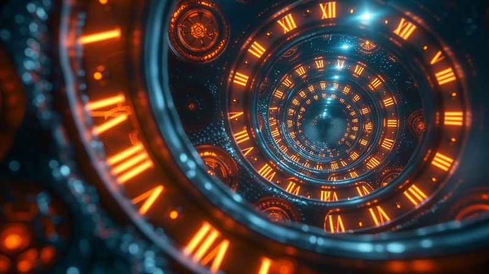

Figure 1: When the manipulation of space/time becomes a standard every day occurance.
Step into a future, thousands of years ahead, where the fabric of time is as malleable as clay, shaped by technology that surpasses the wildest dreams of physicists like Einstein and Hawking—welcome to the Age of Chronos.
The Chrono Wars: Enter the era of the Chrono Wars—a time of unprecedented conflict and technological advancement. As star systems compete for supremacy, the mastery of time dilation technology becomes the ultimate weapon and economic boon. This period is marked by rapid innovation, the rise and fall of empires, and the birth of a new socio-political landscape.
Prelude to the Commonwealth: Discover the chaotic years leading up to the formation of the Setsafar Commonwealth. As old powers crumble and new alliances form, visionary leaders and rogue factions vie to shape the destiny of countless worlds. This is a story of ambition, desperation, and the relentless pursuit of control over time itself.
Technological Marvels and Catastrophes: Explore the breakthroughs in quantum engineering and the harrowing consequences of their misuse. From the creation of automata capable of withstanding the ravages of accelerated time, to the devastating toll of unchecked time dilation zones, this era is as much a testament to human ingenuity as it is a cautionary tale.
Cultural and Societal Shifts: The manipulation of time has not only transformed economies and warfare but has also reshaped societies. Delve into the cultural renaissance sparked by new technologies, and the ethical dilemmas faced by civilizations as they grapple with the power to alter the flow of time.
Step into The Age of Chronos and experience the pivotal events that set the stage for the future. From the innovators who dared to bend time to their will, to the communities struggling to find their place in an ever-changing cosmos, this is a saga of power, transformation, and the enduring human spirit.
I am not a science fiction writer (although, I suspose, I am now, by definition). I am not a physicist. I will make errors in building this world. But it is not meant to challenge the great hard sci-fi novels. It is an imaginative journey through time, exploring how humanity might not only reach the stars, but also manipulate time itself. Unlike many “time-travel” stories that explore movement back and forth in time, I focus on a world where time moves only forward, albeit at different speeds (known as “time dilation”), as dictated by Einstein’s theory of relativity. In our journey to the stars, time dilation is an inevitable phenomenon, so I have taken that concept and run with it.
This project is my attempt to answer the question: “What does this look like for society?” It’s a speculative exploration of future possibilities, combining known science with creative conjecture. The Physics section of this site lays out the foundational science, including a quick introduction to Einstein’s theory of general relativity and an overview of the Quantum Loop Gravity (QLG) theory. While QLG is a model used with some success in measuring astrophysical phenomena, it remains speculative. My use of QLG extends into the realm of soft sci-fi, imagining its implications tens of thousands of years from now. This is a journey into speculative science fiction, the world of the Age of Chronos.